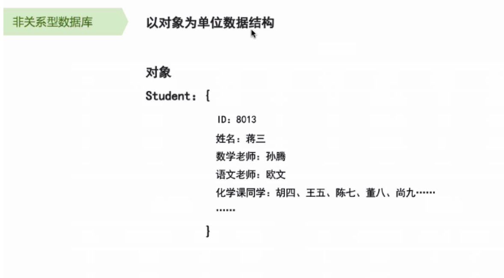

数据库基本知识
- 数据库定义：存数据的仓库／记录本
- 分类：
客户端：
短期数据：微信接收到的文件、微信缓存，可以长期存在，但是清除数据时，首当其冲被删除
有的是加载在内存里，有的是加载在数据库里
长期数据：埋点数据
服务端：
短期数据：游戏中，玩家游戏过程的数据
长期数据：用户ID等基本信息

关系型数据库&非关系型数据库
关系型数据库可以类比为：货车
非关系型数据库可以类比为：跑车
总而言之：关系型数据库是货车、表与表、表内，本质是由一张一张的表组成
关于数据库，产品经理需要注意的几点：
- 定好表结构后在加数据是非常难的，所以要注意提前想好未来业务扩展的可能性
eg:要告诉开发未来可能会增加什么业务或者功能或者字段 - 增删改查是数据库语言的常见操作：要注意效率
eg:数据库语言是人写的，如果按逻辑来执行，人做起来比较费力，那么计算机做起来也会比较费力，只不过比人快一些。 - 产品的用户量级和频率影响表结构：针对某些复杂的业务模型，如运营的特殊需求可以采用离线查询的方式
eg:对于一些非常用的数据，在数据库闲暇时将数据查询出来后存在一张表里，然后之后只需要查询这个表就可以了，不用去数据库里进行表于表之前的查询 - 表的行数超过一定限制可能出问题：注意预估业务规模